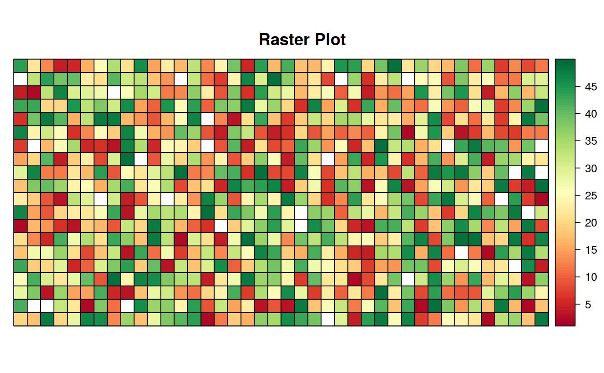

Function to create a polygon fishnet of specified resolution
over a raster dataset. By default, the fishnet is built so that
each cell corresponds to a raster cell. If the pix_for_cell argument is
set, then the polygons of the fishnet are built so to include the specified
number of cells in each direction. If the cellsize option is set, a fishnet
of the specified resolution is created over the extent of the raster)
create_fishnet(in_rast, pix_for_cell = 1, shape = "rect", cellsize = NULL,
exact_csize = TRUE, out_file = NULL, overwrite = TRUE,
crop_layer = NULL, verbose = TRUE)
Arguments
| in_rast |
raster file or object of class raster* on which the fishnet
needs to be derived. |
| pix_for_cell |
numeric(1/2) (optional) 1/2 element numeric array
specifying how many pixels of the #' raster will be included in each
polygon of the fishnet (if only one element is provided, the #' same number
of pixel is aggregated in each direction). Ignored if cellsize is not null,
Default: 1
|
| shape |
character [\"rect\" \"hex\"]
|
| cellsize |
numeric(1/2) (optional) 1/2 element array specifying the
dimensions of the desired #' cells in the x and y directions (if only one
element is provided, the same cellsize is used in each direction),
Default: NULL
|
| exact_csize |
logical If TRUE, the function strictly adheres to what
specified in cellsize or pix_for_cell (i.e., it does not alter the fishnet
cell to get a regular fishnet over the raster). The last column/row of the
fisnhet have therefore a different area, but the other cells respect what
specified by the user (i.e., having a regular 2x2 km grid).
|
| out_file |
logical PARAM_DESCRIPTION, Default: FALSE.
|
| overwrite |
logical PARAM_DESCRIPTION, Default: TRUE.
|
| crop_layer |
logical object of class Extent. If not null, the
fishnet is cropped on this extent, without "moving" the nodes of the grid.
This is useful to crop a grid created on the basis of a different raster
coordinates on top of a different raster, Default: FALSE. CURRENTLY NOT
IMPLEMENTED - MAY BE DEPRECATED !
|
| verbose |
logical If FALSE, processing messages are suppressed,
Default: TRUE.
|
Value
OUTPUT_DESCRIPTION
Details
DETAILS
Examples
# create a fishnet over an input raster file and save it as a shapefile
library(raster)
library(sprawl)
library(rasterVis)
#> Loading required package: lattice
#>
#> Attaching package: ‘lattice’
#> The following object is masked from ‘package:sprawl’:
#>
#> levelplot
#> Loading required package: latticeExtra
#> Loading required package: RColorBrewer
#> create_fishnet --> Creating Fishnet over in_rast
#> crop_vect --> cropping . on extent of in_rast
#> although coordinates are longitude/latitude, st_intersection assumes that they are planar

fishnet <- create_fishnet(in_rast, pix_for_cell = c(4,2))
#> create_fishnet --> Creating Fishnet over in_rast
#> crop_vect --> cropping . on extent of in_rast
#> although coordinates are longitude/latitude, st_intersection assumes that they are planar
fishnet <- create_fishnet(in_rast, cellsize = c(25,25))
#> create_fishnet --> Creating Fishnet over in_rast
#> crop_vect --> cropping . on extent of in_rast
#> although coordinates are longitude/latitude, st_intersection assumes that they are planar
# plotting with `exact_csize` = FALSE creates a grid that covers the extent with
# regular cells, by adapting the cellsize (see `sf::st_make_grid`)
fishnet <- create_fishnet(in_rast, cellsize = c(25,25),
exact_csize = FALSE)
#> create_fishnet --> Creating Fishnet over in_rast
#> crop_vect --> cropping . on extent of in_rast
#> although coordinates are longitude/latitude, st_intersection assumes that they are planar
# using shape = "hex" gives and hexagonal grid instead
fishnet <- create_fishnet(in_rast, cellsize = c(25,25),
exact_csize = TRUE, shape = "hex")
#> create_fishnet --> Creating Fishnet over in_rast